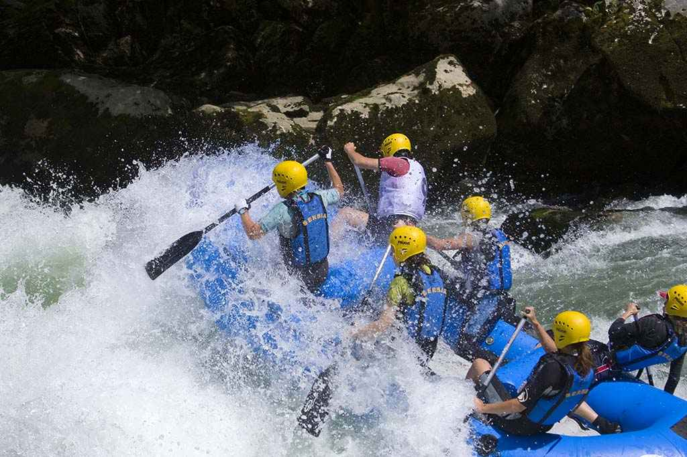
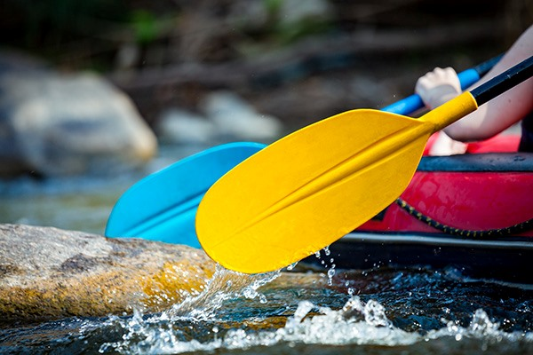
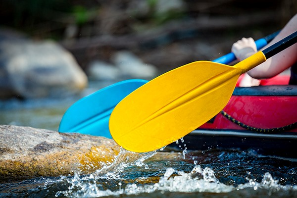
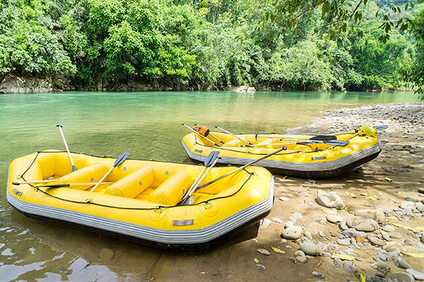
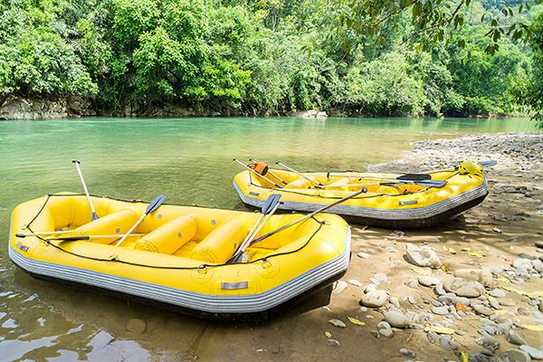

Our mission is to provide thrilling, safe, and unforgettable white water rafting experiences. We are committed to delivering adventure, fostering team spirit, and creating lasting memories for our clients while maintaining the highest standards of safety and environmental respect. Create a CSS file for your rafting site named "rafting.css" and store it in the styles folder within the wwr folder. Define the CSS variables in the document :root pseudo-class selector using the color scheme you selected and documented in this week's site plan/graphic identity assignment. Begin by styling the headings and paragraph elements. Add colors to the fonts. Remove the underlines from the social media image links. Allowing the default underline on a hyperlink that is an image is not a good design and may lead to confusion of function.

White Water Rafting
Our History
Founded in 2010, White Water Rafting has grown from a small local adventure company to a premier destination for water sports enthusiasts. Our passion for rivers, adventure, and customer satisfaction has driven our success over the past decade.
Adventure Awaits You!

 

 
